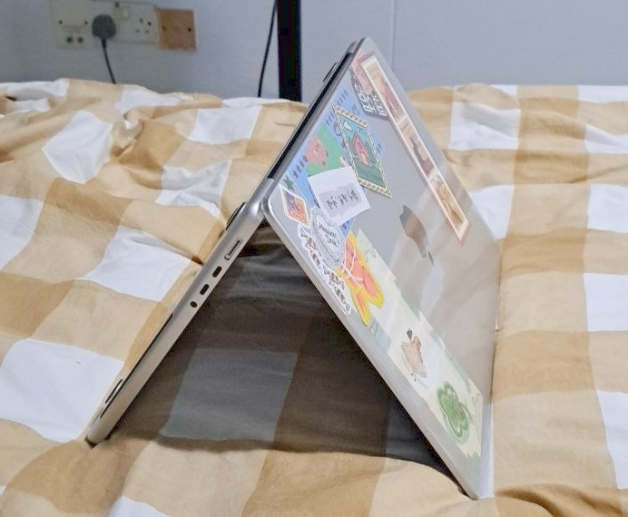

The one where I thought I spoilt my Macbook but its actually perfectly fine

My laptop, drying
Created publications on my ipad
This week, I created some rough publications based on my sketches. As i previously thought my laptop was out of action, I did it all on my ipad.
Reflection of the week
I was proud that I managed to show something for the making this week, although it wasn't much. To be honest, I'm still confused!!! Re-reading my RPO made me realise that all these "cultural rhythms", "senses" made my brain kind of foggy, as in, I don't really know how to define it properly. If some mafia were to kidnap me and demand that I explain my FYP topic, I'm not confident that I would be able to articulate it clearly. I need one last lock-in, mindmap session to really clear my mind and be certain of the direction I'm going. Once again, I have lost the map! goodness. And I think that defining it as capturing time perception in Singapore is impossible.... how am i going to capture the time perception of 3 million people....help